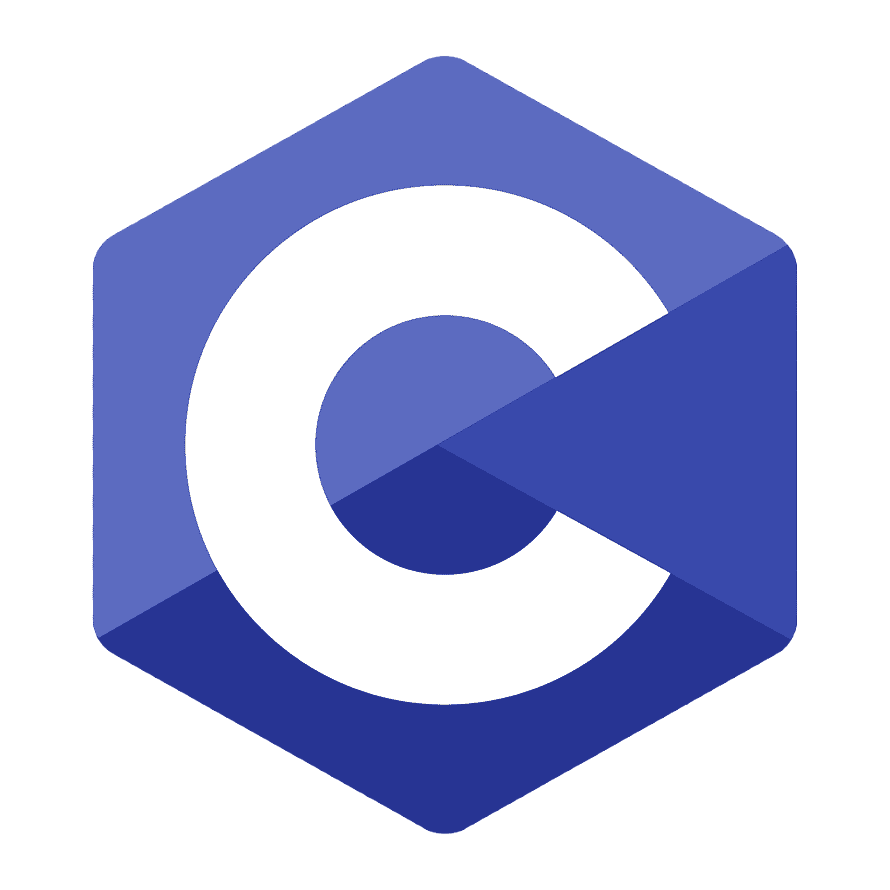

Main C: Domine a Lógica da Programação em C.
Bem-vindo ao ponto de partida essencial para a sua carreira em desenvolvimento! Aqui, você não apenas aprende a sintaxe da Linguagem C, mas principalmente a Lógica de Programação que sustenta qualquer código. Nosso objetivo é ir além, garantindo que você entenda o "porquê" por trás de cada linha. Prepare-se para construir algoritmos robustos e escrever código eficiente desde o primeiro dia, transformando sua visão em soluções concretas.

NOSSO OBJETIVO
Simplicidade
Facilitar o entendimento da linguagem C com explicações diretas, objetivas e exemplos práticos que realmente funcionam.
Confiança
Ser um guia de referência confiável para quem está dando os primeiros passos na programação em C.
Autonomia
Promover a autonomia do aprendizado por meio de conteúdo organizado, progressivo e totalmente acessível.
QUEM SOMOS
Somos alunos do primeiro período do curso de Análise e Desenvolvimento de Sistemas, unidos pelo desafio e pelo entusiasmo de ingressar no mundo da tecnologia. O Main C não é apenas um projeto acadêmico para nós; é o nosso primeiro site e o resultado da nossa própria jornada de aprendizado. Como estudantes, sabemos que os primeiros passos com Algoritmos e Lógica de Programação podem ser desafiadores. Por isso, decidimos transformar nossas descobertas e estudos em uma plataforma prática. Nossa ideia é falar de aluno para aluno, compartilhando o conhecimento da linguagem C de uma forma que nós mesmos gostaríamos de ter encontrado quando começamos. Mais do que apenas um site de programação, o Main C representa a nossa evolução como futuros desenvolvedores e o nosso desejo de ajudar colegas que, assim como nós, buscam facilitar seus estudos e dominar a base da computação de forma simples e acessível.